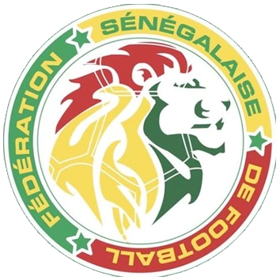
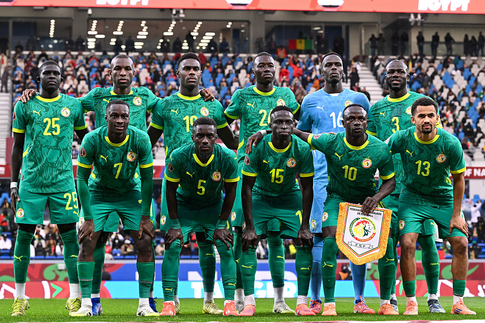
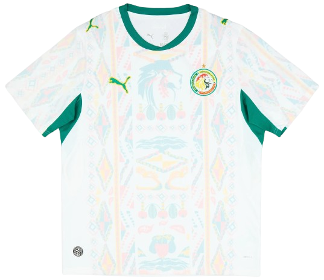
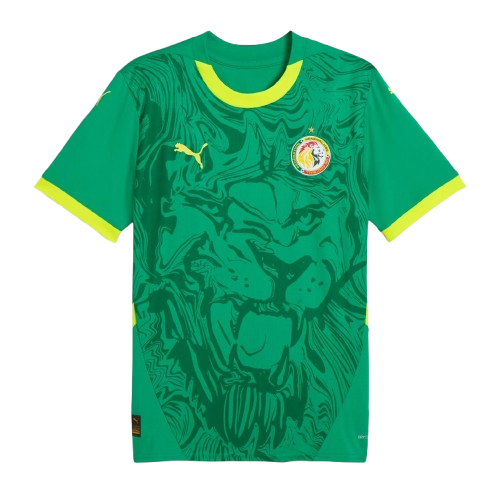

Selección
Senegal
Resumen
Senegal es una selección africana destacada por su poder físico y sus jugadores veloces, con un uniforme muy reconocido en verde, amarillo y rojo.

- Apodo: Los Leones de la Teranga
- Primer Mundial: 2002
- Colores: verde, amarillo y rojo
- Mejor logro: cuartos de final en la Copa Africana de Naciones
Historia
Senegal es una de las selecciones más fuertes de África y ha conseguido resultados importantes en torneos como la Copa Africana de Naciones.

Jugadores
Algunos de los jugadores más importantes de la selección de Senegal son:
- Édouard Mendy (portero)
- Kalidou Koulibaly (defensa)
- Idrissa Gueye (mediocampista)
- Ismaïla Sarr (extremo)
- Habib Diallo (delantero)
- Sadio Mané (delantero)
Indumentaria
El uniforme de Senegal combina verde, amarillo y rojo, reflejando la bandera nacional y la energía de la selección.

